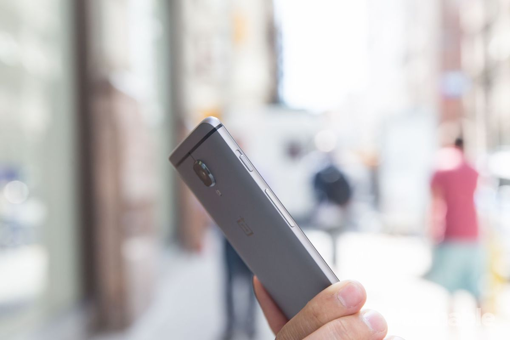
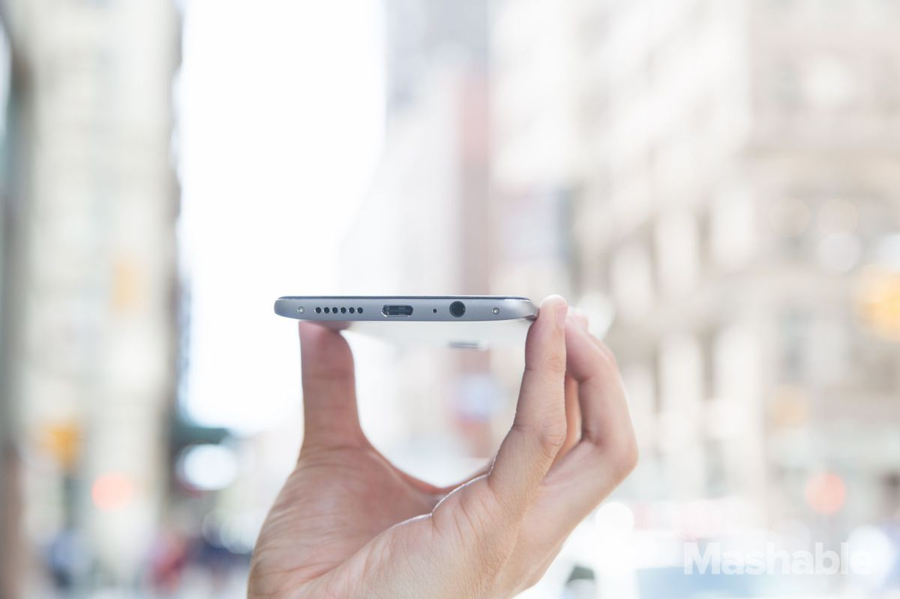

OnePlus 3 is practically the perfect Android smartphone
Carl Pei wants you to believe in OnePlus. It’s been three years
since this 26-year-old co-founded the company, and as he’s talking
to me, the OnePlus 3, the company’s latest flagship, is due to
arrive in less than a week. Things are different this go-around:
the infamous OnePlus hype machine has been operating far
more quietly than in prior years and the much-hated invite
system to buy phones has been scuttled.
"We’re using a different approach for our third year," says Pei.
"As a company grows, expectations change and we have to be
more responsible of a company. We just couldn’t sell on an invite
system at this point in the company’s history." The new phone
is available direct from OnePlus starting today, without
requiring you to jump through any hoops to buy it.
No matter how it’s sold, the OnePlus 3 might be the first affordable
phone that truly makes good on the promise to be as great as the
high-priced flagships from the likes of Samsung and HTC. It has
everything we’ve come to expect from high-end Android phones —
fast processor, premium design, capable camera, quick charging,
a great display — but sells for just $399 unlocked. That’s about
$300 less than you’ll pay for a Samsung Galaxy S7 or HTC 10,
which have similar specs and features.
We’ve heard this pitch from Pei and OnePlus before: the OnePlus 2
was billed as a "2016 flagship killer" even though it was released
in 2015. That phone showed promise, but lacked table stakes
features such as quick charging and NFC. Pei is much more
realistic this year: he says the OnePlus 3 is "competitive to
flagships of this generation in terms of specs."
Pei wants you to believe that OnePlus has learned a thing or two
over the past few years, that it’s a more mature company and not
just a scrappy upstart. Mostly, he wants you to believe that a young
company like OnePlus can produce a device that’s as good as,
if not better than, the established stalwarts in the smartphone
industry.
After spending the past week with the OnePlus 3 in my pocket,
I’m beginning to feel like a believer.
"Influences from everyone"
The fingerprint scanner below the display is fast and reliable
— a significant improvement over the OnePlus 2’s
— and the 3 still has the super useful switch on the
side for toggling between Android’s three notification
settings. It’s by far my favorite hardware feature
on the phone and something I wish all Android
phones came equipped with.
If you’re reading the OnePlus 3’s spec sheet, you
might notice that its 5.5-inch 1080p display isn’t
as high-resolution as the screens on the Galaxy S7,
HTC 10, and other phones released this year. But if
you didn’t look at the spec sheet and just used the phone,
you’d be hard-pressed to notice the difference. Pei says
it was a "conscious choice" to use a 1080p screen in
place of a higher-resolution option, as it provides better
performance and heat management than more
pixel-dense screens. I’m inclined to agree: the AMOLED
screen on the OnePlus 3 is bright, vibrant, easy to see
outdoors, and at 401ppi, plenty sharp enough for human
eyes. You might want something more pixel-dense for
virtual reality, but for everything else you use a smartphone
for, the OnePlus 3’s screen is more than sufficient.
"Gorgeous All Around"
The glass on the 5.5-inch display melts right into a thin chamfer before spilling into the metal body.
The cutouts for all the ports are all located on the bottom.
The fingerprint sensor is rounder this time and still unlocks
the phone quickly with just a touch (no press required) of the finger.
It's faster than the iPhone 6S's Touch ID sensor, too.
Rival phones all sport a sharper and denser Quad HD-resolution screen,
but to be honest, the OnePlus 3's 1080p AMOLED screen still looks great.
While it's not the brightest screen, I could still see the screen fine with the brightness set to 50% to 75% outdoors.


"Sharp Pictures"
It's getting harder and harder to find a flagship phone with a camera that sucks these days.
Every major flagship Android phone has a pretty great camera and low-light performance.
The Galaxy S7/S7 Edge, LG G5, HTC 10
— I've tried them all and they're all outstanding compared to a year ago.
The OnePlus 3's 16-megapixel rear camera and 8-megapixel front-facing camera won't
topple any of its Android rivals if you compare their apertures
(low f-stop number, which is key to better low-light performance),
but that doesn't mean they're inferior.
"Super Crispy Outdoors"
Through a combination of Sony image sensors with phase-detection autofocus
(that's the tech that allows for super-quick autofocusing in about 0.2 seconds) and OnePlus's own software
("Dynamic De-noise" for image noise reduction and "HD Mode" for sharper details
and "HDR" a.k.a. High Dynamic Range for better exposed images),
I was pleasantly surprised at how good the photos were, even in low-light situations.
The cameras, while better than previous OnePlus phones, aren't best-in-class
— many photos came out blurry because the autofocus missed a bunch
of times and it's not great at freezing moving objects
— but it's still pretty good if you know good photography practices.
Even if you don't, the cameras still do a good job,
especially if you're only looking at them on your phone's screen.
"All In Details"
"Shines In Low Light"
The back camera can take pretty crisp photos thanks to the optical image stabilization.
For shooting video, the electronic image stabilization helps smooth out shaky footage.
"Practically Perfect"
I liked the OnePlus 2, but I didn't love it the way I do the Nexus 6P and Galaxy S7/S7 Edge. But I can now say I love the OnePlus 3, too.
It's arguable the screen isn't on par with the those
two phones, which means using it for VR isn't quite as crispy,
but as a phone the OnePlus 3 is off-the-charts spectacular for its price.
Whereas the OnePlus 2 wasn't very future-proof, the OnePlus 3 is. The powerful processor
and insane amount of RAM ensures it won't be obsolete by next year, the second
nano SIM card slot is useful if you travel a lot and NFC means you can use
Android Pay and connect with NFC-compatible speakers and other devices.
Including a microSD card slot for adding more storage would have made the OnePlus 3 even closer to perfect.
The OnePlus 3 is practically perfect, save for expandable storage, waterproofing, fast wireless charging and a QuadHD display.
To be honest, I could live without any of these.
OnePlus has really outdone itself and its competitors this year. I dare you to find a
better Android phone for $400.